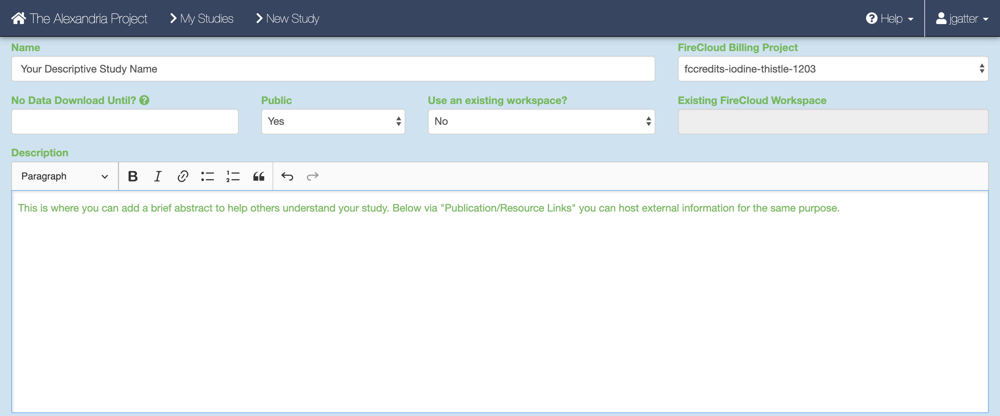

Running on Alexandria¶
The Alexandria portal is hosted on the Broad Institute’s Single Cell Portal (SCP), therefore running the workflow here is identical to running it on SCP.
The Alexandria workflow version of dropseq_cumulus is intended as a user-accessible means of analyzing and visualizing single-cell RNA-seq data. Therefore, only essential parameters are exposed.
Those who would like more options for running the workflow should use the Terra version of the workflow and then transfer/sync the outputs to your Alexandria workspace study bucket.
If you truly would like certain parameters to be exposed, please post an issue on our GitHub repo.
Known Bugs¶
Attention
For the time being, an older version of the workflow, dropseq_scCloud v74, is currently hosted on Alexandria. This workflow will not allow you to use bcl2fastq and will not allow you to upload data from the root of the bucket. You can use the Terra version of the workflow if need be.
For any discovered bugs, please contact us with bug reports on our GitHub repo.
1. Sign in¶
Visit Alexandria and at the top-right click “Sign In”. Sign in using your broadinstitute.org email account and allow permissions.
2. Create a new study¶
To create a new study, click Add a Study. Alternatively, to run the workflow on a pre-existing study, select “My Studies”, click the Upload/Edit Study button for your study of choice and proceed to upload your sequence data files.
When you arrive at the New Study page, first enter the name that you and others will use to identify your study.
Then, use the FireCloud Billing Project dropdown menu to select a billing project other than Default Project in order to run workflows in your study. If you do not have a billing project associated with your account, first click the “create a billing project” hyperlink under the Billing Projects header, on the next page click New Billing Project, and then follow the instructions supplied by clicking the “Instructions on creating Google billing accounts” button. You must include a billing project to access pipelines.
Next, fill out other fields to your liking, including the “No Data Download Until?” box, the “Public” dropdown menu, the “Use an existing workspace?” dropdown menu, and the “Description” box. .
To share your study with others, click the “Share Study” button for whomever you wish to share your study with and then enter in their respective emails and permissions.
Attach external resources or publications that will help viewers understand your study using the “Add an External Resource” button for however documents you wish to share.
When all fields are filled in to your satisfaction, click the “Create Study” at the bottom.
3. Uploading sequence data files¶
When the study is created you will arrive at the Upload/Edit Study page. Since we are running the workflow and do not have any expression matrix, metadata, cluster, or coordinate label files yet (these will be produced by the workflow), click the “Sequence Data” tab.

There are a few methods of uploading files to your workspace Google Bucket. Before proceeding, find your workspace bucket by visiting your workspace’s “Dashboard” tab. In the bottom-right corner of the dashboard, you will see your Google Bucket ID which you can copy by clicking the adjacent clipboard button. You can visit the bucket interface by clicking the “Open in Browser” hyperlink.
First upload your sequence data files. We highly recommend installing and using gsutil, a fast and powerful tool made by Google that quickly moves files to and from the cloud. Through your computer’s console, install the gsutil tool by following the installation guide. An example command that would transfer files from your computer to the workspace bucket would be:
gsutil -m cp local/path/to/file.fastq.gz gs://[Bucket ID]/destination/directory/
For an entire folder of sequence data, copy it recursively through using the command as such:
gsutil -m cp -r local/path/to/sequencing_run_directory gs://[Bucket ID]/destination/sequencing_run_directory
Any desination path that does not exist already will be created upon entering the command!
To see other methods of uploading data, see here.
4. Creating and uploading your input CSV file¶
To instruct the workflow, you must create a sample sheet, called the input CSV file, that contains sample names, paths to sequencing data on the workspace bucket, and any metadata you wish to include on Alexandria. Write your input CSV file in a text editor or a spreadsheet manipulation program such as Microsoft Excel and save your file as a comma-separated value (.csv) file. For FASTQs The input CSV file must have column headers and contains the following in whatever order:
(REQUIRED) the ‘Sample’ column, the sample/array names that must prefix the respective .fastq or .fastq.gz files. Any preexisting count matrices must be prefixed in the same way.
(RECOMMENDED) both ‘R1_Path’ and ‘R2_Path’ columns, the paths to .fastq/.fastq.gz files on the bucket. Alternatively, see the section on understanding the dropseq_default_directory parameter
(OPTIONAL) Other metadata columns that will be appended to the alexandria_metadata.txt file generated after running Cumulus. Column headers must match exacty the names of attributes found in the Alexandria Metadata Convention. Labels outside of this convention will be supported in the future.

For processing sequencing run directories containing BCL files, see here.
To verify that the paths you listed in the file are correct, you can navigate to your bucket using the instructions listed above and locate your sequence data files. Click on each file to view its URI (gsURL), which should resemble the format gs://<bucket ID>/path/to/file.fastq.gz in the case of gzip-compressed FASTQ files (regular FASTQ files are fine too). The locations you should enter in the path columns of your input CSV file should be all of the characters following the bucket ID and trailing slash, in this case path/to/file.fastq.gz.

When you have finished creating your sequencing data, proceed to the “Miscellaneous” tab in Alexandria. Here is where you will upload your Alexandria Sheet (spreadsheet) that will instruct the workflow.
To upload the Alexandria Sheet, click the “Choose File” button and navigate to select your Alexandria Sheet. Then set the file type as “Other” and click “Save” under the “Actions” text.

5. Configure and launch dropseq_cumulus workflow¶
To ensure that your study recognizes all files, return to your “My Studies” page and hit the “Synchronize” button for your study.
On the “My Studies” page, click the name of your study hyperlink. Next, visit the “Analysis” tab which contains your “Submission History” and the interface that allows you to “Submit a Workflow.”
By default you are on the “Select Workflow” tab. Use the dropdown menu to select the dropseq_cumulus workflow.
Then, click on the “Configure Inputs & Submit” tab. Read the table of parameters below and enter the fields for each parameter to your liking. 
Once done, click the “Submit Workflow” button at the bottom to submit the dropseq_cumulus job. Your job is viewable up top underneath the “Submission History” header.

Here you will eventually know if the job ran succesfully. Provided the job does not fail within 10 minutes, the job will take about a variable amount of time to complete depending on the tasks you are running and the amount of data you gave it. Drop-seq pipeline usually will take 20 to 45 hours to run while Cumulus should take an hour or less.
6. Advice for troubleshooting¶
If the job fails it is recommended you navigate to and read the log file of the task that failed.
To do this, click the Link URL of the failed job.
Navigate to the log file of the failed task, which in this case is setup_dropseq.

Evaluate the error based on the message and decide whether you need to alter variables, move files in your bucket, or change and reupload your Alexandria Sheet.
Make sure to synchronize your study before relaunching the job.
7. Synchronizing and exploring visualization options¶
If you study ran through the Cumulus task successfully: Synchronize your the outputs by clicking the “Sync” button in the “Analysis” tab.
Visualize the study by clicking the “Explore” tab and then the “View Options” hyperlink to gain more options for analysis.